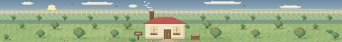

画作画廊
手绘、板绘、像素画——都往这儿挂。
TIP
替换素材：把图片丢进 assets/artworks/，再到 js/data.js 里改文件名即可。
代码演示
截图、录屏、动图都放这里，视频也可以直接播。
截图 / 动图
视频演示
TIP
视频：把 mp4 放进 assets/video/，再在 js/data.js 的 videos 里补上 src。
关于我
随便写点，也可以直接删掉这段。
NICE TO MEET YOU —— 我是个喜欢画画也喜欢折腾代码的人，习惯用像素格子把想法摆整齐。
白天写程序，晚上涂涂抹抹。这个站点用来存放作品与实验，慢慢更新，不着急。